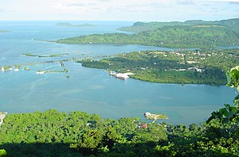

Economy of the Federated States of Micronesia
|  | |
| Currency | United States dollar |
|---|---|
| 1 October- 30 September | |
| Statistics | |
| GDP | |
| GDP rank | 186th nominal (2013) |
GDP growth |
|
GDP per capita | |
GDP by sector | Agriculture: 26.3% Industry: 18.9% Services: 54.8% (2017 est.)[2] |
| 1.5% (2018)[1] | |
Population below poverty line | 26.7% (2000)[3] |
| 40.1 (2013)[4] | |
Labor force | 37,920 (2010)[5] |
Labor force by occupation | services: 93.9% agriculture: 5.2% industry: 0.9% (2013 est.)[6] |
| Unemployment | 16.2% (2010)[7] |
| External | |
| Exports | $39.88 Million (2015 est.)[8] |
| Imports | $167.8 Million (2015 est.)[9] |
FDI stock | $15.8 Million (2013 est.)[10] |
| Public finances | |
| 24.5% of GDP (2017 est.)[11] | |
| Revenues | $213.8 Million (2013 est.)[12] |
| Expenses | $192.1 Million (2013 est.)[13] |
| $157 Million (2016)[14] | |
All values, unless otherwise stated, are in US dollars. | |
{kind=link}
The economic activity of the Federated States of Micronesia consists primarily of subsistence agriculture and fishing. The islands have few mineral deposits worth exploiting, except for high-grade phosphate. The potential for a tourist industry exists, but the remoteness of the location and a lack of adequate facilities hinder development. Financial assistance from the US is the primary source of revenue, with the US pledged to spend $1.3 billion in the islands in 1986–2001. Geographical isolation and a poorly developed infrastructure are major impediments to long-term growth.
Under the terms of the Compact of Free Association, the United States provided FSM with around $2 billion in grants and services from 1986 to 2001. The Compact's financial terms are being renegotiated for an extension period. In 2001 the U.S. provided more than $84 million in Compact grants—an amount equivalent to over one-third of FSM's GDP—plus more than $20 million through other federal programs. Total official development assistance from all sources was more than $100 million in 2001, with nearly 90% of that total coming from the U.S.
The FSM public sector plays a central role in the economy as the administrator of the Compact money. The national and state-level governments employ over one-half of the country's workers and provide services accounting for more than 40% of GDP. Faced with the potential decrease or cessation of some of the assistance programs upon the Compact's financial provisions' expiry in 2001, the Government of the FSM in 1996 began to implement a program of economic reforms designed to reduce the role of the public sector in the economy. In addition, the advent of music startups using .fm domain names has provided a new, albeit fairly small, stream of revenue to the government.[15]
Industries
[edit]The fishing industry is highly important. Foreign commercial fishing fleets pay over $20 million annually for the right to operate in FSM territorial waters. These licensing fees account for nearly 30% of domestic budgetary revenue. Additionally, exports of marine products, mainly reexports of fish to Japan, account for nearly 85% of export revenue.
The tourist industry is present but has been hampered by a lack of infrastructure. Visitor attractions include scuba diving in each state, World War II battle sites, and the ancient ruined city of Nan Madol on Pohnpei. Some 15,000 tourists visit the islands each year. The Asian Development Bank has identified tourism as one of FSM's highest potential growth industries.
Farming is mainly subsistence, and its importance is declining. The principal crops are coconuts, bananas, betel nuts, cassava, and sweet potatoes. Less than 10% of the formal labor force and less than 7% of export revenue come from the agriculture sector. Manufacturing activity is modest, consisting mainly of the export of betel nut in Yap and production of buttons from trochus shells.
Taxation and trade
[edit]The large inflow of official assistance to FSM allows it to run a substantial trade deficit and to have a much lighter tax burden than other states in the region (11% of GDP in FSM compared to 18–25% elsewhere). The government also borrowed against future Compact disbursements in the early 1990s, yielding an external debt of $111 million in 1997 (over 50% of GDP).
There are no patent laws in Micronesia.[16]
Statistics
[edit]GDP:
purchasing power parity - $277 million (2002 est.)
note:
GDP is supplemented by grant aid, averaging perhaps $100 million annually
GDP - real growth rate: 1% (2002 est.)
GDP - per capita: purchasing power parity - $3 900 (2002 est.)
GDP - composition by sector:
agriculture:
47%
industry:
10%
services:
43% (2010 est.)
Population below poverty line: 22.3%
Household income or consumption by percentage share:
lowest 10%:
NA%
highest 10%:
NA%
Inflation rate (consumer prices): 2% (2012 est.)
Labor force: 37,410 (2000)
Labor force - by occupation: two-thirds are government employees
Unemployment rate: 15% (2010 estimate)
Budget:
revenues:
$157.5 million ($74 million less grants
expenditures:
$134 million; including capital expenditures of $17.9 million (FY05 est.)
Industries: tourism, construction, fish processing, craft items from shell, wood, and pearls
Industrial production growth rate: NA%
Electricity - production: 261 million kWh (2010)
Electricity - consumption: 222 million kWh (2010)
Electricity - exports: 0 kWh (2010)
Electricity - imports: 0 kWh (2010)
Agriculture - products: black pepper, tropical fruits and vegetables, coconuts, cassava (tapioca), sweet potatoes; pigs, chickens
Exports: $123 million (f.o.b., 2000 est.)
Exports - commodities: fish, garments, bananas, black pepper
Exports - partners: Japan, United States, Guam, China (2010)
Imports: $82.5 million f.o.b. (2010 est.)
Imports - commodities: food, manufactured goods, machinery and equipment, beverages
Imports - partners: US, Australia, Japan (2010)
Debt - external: $44 million (2010 est.)
Economic aid - recipient: $64 million (2010); note - under terms of the Compact of Free Association, the US will provide $1.3 billion in grant aid during the period 1986-2001
Currency: 1 United States dollar (US$) = 100 cents
Exchange rates: US currency is used
Fiscal year: 1 October - 30 September
References
[edit] This article incorporates public domain material from The World Factbook. CIA.
This article incorporates public domain material from The World Factbook. CIA.
- ^ a b c d e f "World Economic Outlook Database, October 2019". International Monetary Fund. Retrieved 20 October 2019.
- ^ "The World Factbook". 6 December 2023.
- ^ "The World Factbook". 6 December 2023.
- ^ "Gini index (World Bank estimate) | Data".
- ^ "The World Factbook". 6 December 2023.
- ^ "The World Factbook". 6 December 2023.
- ^ "The World Factbook". 6 December 2023.
- ^ "The World Factbook". 6 December 2023.
- ^ "The World Factbook". 6 December 2023.
- ^ "The World Factbook". 6 December 2023.
- ^ "The World Factbook". 6 December 2023.
- ^ "The World Factbook". 6 December 2023.
- ^ "The World Factbook". 6 December 2023.
- ^ "The World Factbook". 6 December 2023.
- ^ Hezel, Francis X. (2012). "Pacific Island Nations: How Viable Are Their Economies?". Pacific Islands Policy. 7: 15. hdl:10125/22221. Retrieved 1 September 2022.
- ^ "Gazetteer - Patents". Archived from the original on 2018-09-26. Retrieved 2008-02-18.